2.24. Methane Model¶
The representation of processes in the methane biogeochemical model integrated in CLM [CLM4Me; (Riley et al. 2011a)] is based on several previously published models (Cao et al. 1996; Petrescu et al. 2010; Tianet al. 2010; Walter et al. 2001; Wania et al. 2010; Zhang et al. 2002; Zhuang et al. 2004). Although the model has similarities with these precursor models, a number of new process representations and parameterization have been integrated into CLM.
Mechanistically modeling net surface CH4 emissions requires representing a complex and interacting series of processes. We first (section 2.24.1) describe the overall model structure and flow of information in the CH4 model, then describe the methods used to represent: CH4 mass balance; CH4 production; ebullition; aerenchyma transport; CH4 oxidation; reactive transport solution, including boundary conditions, numerical solution, water table interface, etc.; seasonal inundation effects; and impact of seasonal inundation on CH4 production.
2.24.1. Methane Model Structure and Flow¶
The driver routine for the methane biogeochemistry calculations (ch4, in ch4Mod.F) controls the initialization of boundary conditions, inundation, and impact of redox conditions; calls to routines to calculate CH4 production, oxidation, transport through aerenchyma, ebullition, and the overall mass balance (for unsaturated and saturated soils and, if desired, lakes); resolves changes to CH4 calculations associated with a changing inundated fraction; performs a mass balance check; and calculates the average gridcell CH4 production, oxidation, and exchanges with the atmosphere.
2.24.2. Governing Mass-Balance Relationship¶
The model (Figure 2.20) accounts for CH4 production in the anaerobic fraction of soil (P, mol m-3 s-1), ebullition (E, mol m-3 s-1), aerenchyma transport (A, mol m-3 s-1), aqueous and gaseous diffusion (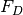, mol m-2 s-1), and oxidation (O, mol m-3 s-1) via a transient reaction diffusion equation:
(1)¶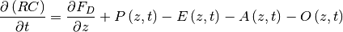
Here z (m) represents the vertical dimension, t (s) is time, and R
accounts for gas in both the aqueous and gaseous
phases:, with
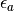, 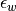, and  (-) the air-filled porosity, water-filled
porosity, and partitioning coefficient for the species of interest,
respectively, and
(-) the air-filled porosity, water-filled
porosity, and partitioning coefficient for the species of interest,
respectively, and  represents CH4 or O2 concentration with respect to water volume (mol m-3).
represents CH4 or O2 concentration with respect to water volume (mol m-3).
An analogous version of equation is concurrently solved for O2, but with the following differences relative to CH4: P = E = 0 (i.e., no production or ebullition), and the oxidation sink includes the O2 demanded by methanotrophs, heterotroph decomposers, nitrifiers, and autotrophic root respiration.
As currently implemented, each gridcell contains an inundated and a non-inundated fraction. Therefore, equation is solved four times for each gridcell and time step: in the inundated and non-inundated fractions, and for CH4 and O2. If desired, the CH4 and O2 mass balance equation is solved again for lakes (Chapter 9). For non-inundated areas, the water table interface is defined at the deepest transition from greater than 95% saturated to less than 95% saturated that occurs above frozen soil layers. The inundated fraction is allowed to change at each time step, and the total soil CH4 quantity is conserved by evolving CH4 to the atmosphere when the inundated fraction decreases, and averaging a portion of the non-inundated concentration into the inundated concentration when the inundated fraction increases.
Figure 2.20 Schematic representation of biological and physical processes integrated in CLM that affect the net CH4 surface flux (Riley et al. 2011a). (left) Fully inundated portion of a CLM gridcell and (right) variably saturated portion of a gridcell.
2.24.3. CH4 Production¶
Because CLM does not currently specifically represent wetland plant functional types or soil biogeochemical processes, we used gridcell-averaged decomposition rates as proxies. Thus, the upland (default) heterotrophic respiration is used to estimate the wetland decomposition rate after first dividing off the O2 limitation. The O2 consumption associated with anaerobic decomposition is then set to the unlimited version so that it will be reduced appropriately during O2 competition. CH4 production at each soil level in the anaerobic portion (i.e., below the water table) of the column is related to the gridcell estimate of heterotrophic respiration from soil and litter (RH; mol C m-2 s-1) corrected for its soil temperature (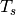) dependence, soil temperature through a 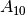 factor (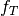), pH (), redox potential (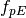), and a factor accounting for the seasonal inundation fraction (S, described below):
(2)¶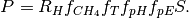
Here, 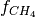 is the baseline ratio between CO2 and CH4 production (all parameters values are given in Table 2.32). Currently, is modified to account for our assumptions that methanogens may have a higher Q than aerobic decomposers; are not N limited; and do not have a low-moisture limitation.
When the single BGC soil level is used in CLM (Chapter 2.21), the
temperature factor, , is set to 0 for temperatures equal
to or below freezing, even though CLM allows heterotrophic respiration
below freezing. However, if the vertically resolved BGC soil column is
used, CH4 production continues below freezing because
liquid water stress limits decomposition. The base temperature for the
 factor, 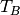, is 22o C and effectively
modified the base value.
factor, 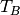, is 22o C and effectively
modified the base value.
For the single-layer BGC version, 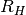 is distributed among soil levels by assuming that 50% is associated with the roots (using the CLM PFT-specific rooting distribution) and the rest is evenly divided among the top 0.28 m of soil (to be consistent with CLM’s soil decomposition algorithm). For the vertically resolved BGC version, the prognosed distribution of is used to estimate CH4 production.
The factor is nominally set to 1, although a static spatial map of pH can be used to determine this factor (Dunfield et al. 1993) by applying:
(3)¶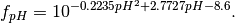
The factor assumes that alternative electron acceptors are reduced with an e-folding time of 30 days after inundation. The default version of the model applies this factor to horizontal changes in inundated area but not to vertical changes in the water table depth in the upland fraction of the gridcell. We consider both and to be poorly constrained in the model and identify these controllers as important areas for model improvement.
As a non-default option to account for CH4 production in anoxic microsites above the water table, we apply the Arah and Stephen (1998) estimate of anaerobic fraction:
(4)¶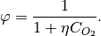
Here,  is the factor by which production is inhibited
above the water table (compared to production as calculated in equation
, 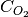 (mol m-3) is the bulk soil oxygen
concentration, and
is the factor by which production is inhibited
above the water table (compared to production as calculated in equation
, 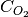 (mol m-3) is the bulk soil oxygen
concentration, and  = 400 mol m-3.
= 400 mol m-3.
The O2 required to facilitate the vertically resolved heterotrophic decomposition and root respiration is estimated assuming 1 mol O2 is required per mol CO2 produced. The model also calculates the O2 required during nitrification, and the total O2 demand is used in the O2 mass balance solution.
| Mechanism | Parameter | Baseline Value | Range for Sensitivity Analysis | Units | Description |
|---|---|---|---|---|---|
| Production | |
2 | 1.5 – 4 | CH4 production |
|
| 1 | On, off | Impact of pH on CH4 production | |||
| 1 | On, off | Impact of redox potential on CH4 production | |||
| S | Varies | NA | Seasonal inundation factor | ||
 |
0.2 | NA | Effect of anoxia on decomposition rate (used to calculate S only) | ||
| 0.2 | NA | Ratio between CH4 and CO2 production below the water table | |||
| Ebullition |  |
0.15 | NA | mol m-3 | CH4 concentration to start ebullition |
| 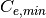 | 0.15 | NA | CH4 concentration to end ebullition | ||
| Diffusion | 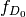 | 1 | 1, 10 | m2 s-1 | Diffusion coefficient multiplier (Table 24.2) |
| Aerenchyma | p | 0.3 | NA | Grass aerenchyma porosity | |
| R | 2.910-3 m | NA | m | Aerenchyma radius | |
| 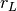 | 3 | NA | Root length to depth ratio | ||
| 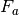 | 1 | 0.5 – 1.5 | Aerenchyma conductance multiplier | ||
| Oxidation | 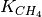 | 5 x 10-3 | 510 - 510-2 - 510-2 |
mol m-3 | CH4 half-saturation oxidation coefficient (wetlands) |
| 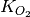 | 2 x 10-2 | 210-3 - 210-1 | mol m-3 | O2 half-saturation oxidation coefficient | |
| 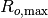 | 1.25 x 10 | 1.2510 - 1.2510 | mol m-3 s-1 | Maximum oxidation rate (wetlands) |
2.24.4. Ebullition¶
Briefly, the simulated aqueous CH4 concentration in each soil level is used to estimate the expected equilibrium gaseous partial pressure (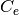 ), as a function of temperature and depth below the water table, by first estimating the Henry’s law partitioning coefficient (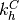 ) by the method described in Wania et al. (2010):
(5)¶
(6)¶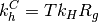
(7)¶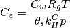
where 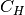 is a constant, 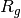 is the universal gas constant, 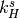 is Henry’s law partitioning coefficient at standard temperature ( ), is local aqueous CH4 concentration, and p is pressure.
The local pressure is calculated as the sum of the ambient pressure, water pressure down to the local depth, and pressure from surface ponding (if applicable). When the CH4 partial pressure exceeds 15% of the local pressure (Baird et al. 2004; Strack et al. 2006; Wania et al. 2010), bubbling occurs to remove CH4 to below this value, modified by the fraction of CH4 in the bubbles [taken as 57%; (Kellner et al. 2006; Wania et al. 2010)]. Bubbles are immediately added to the surface flux for saturated columns and are placed immediately above the water table interface in unsaturated columns.
2.24.5. Aerenchyma Transport¶
Aerenchyma transport is modeled in CLM as gaseous diffusion driven by a concentration gradient between the specific soil layer and the atmosphere and, if specified, by vertical advection with the transpiration stream. There is evidence that pressure driven flow can also occur, but we did not include that mechanism in the current model.
The diffusive transport through aerenchyma (A, mol m-2 s-1) from each soil layer is represented in the model as:
(8)¶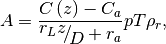
where D is the free-air gas diffusion coefficient (m:sup:2 s-1); C(z) (mol m-3) is the gaseous concentration at depth z (m); is the ratio of root length to depth; p is the porosity (-); T is specific aerenchyma area (m:sup:2 m-2); 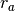 is the aerodynamic resistance between the surface and the atmospheric reference height (s m:sup:-1); and is the rooting density as a function of depth (-). The gaseous concentration is calculated with Henry’s law as described in equation .
Based on the ranges reported in Colmer (2003), we have chosen baseline aerenchyma porosity values of 0.3 for grass and crop PFTs and 0.1 for tree and shrub PFTs:
(9)¶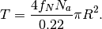
Here 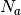 is annual net primary production (NPP, mol m-2 s-1); R is the aerenchyma radius (2.9 10-3 m); 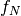 is the belowground fraction of annual NPP; and the 0.22 factor represents the amount of C per tiller. O2 can also diffuse in from the atmosphere to the soil layer via the reverse of the same pathway, with the same representation as Equation but with the gas diffusivity of oxygen.
CLM also simulates the direct emission of CH4 from leaves to the atmosphere via transpiration of dissolved methane. We calculate this flux (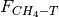 ; mol m2 s-1) using the simulated soil water methane concentration (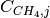 (mol m-3)) in each soil layer j and the CLM predicted transpiration (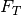 ) for each PFT, assuming that no methane was oxidized inside the plant tissue:
(10)¶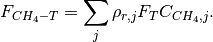
2.24.6. CH4 Oxidation¶
CLM represents CH4 oxidation with double Michaelis-Menten kinetics (Arah and Stephen 1998; Segers 1998), dependent on both the gaseous CH4 and O2 concentrations:
(11)¶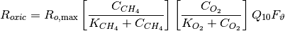
where and are the half
saturation coefficients (mol m-3) with respect to
CH4 and O2 concentrations, respectively;
is the maximum oxidation rate (mol
m-3 s-1); and
specifies the temperature dependence of the reaction with a base
temperature set to 12 o C. The soil moisture limitation
factor 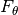 is applied above the water table to
represent water stress for methanotrophs. Based on the data in
Schnell and King (1996), we take
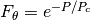, where P is the soil moisture
potential and 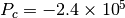 mm.
2.24.7. Reactive Transport Solution¶
The solution to equation is solved in several sequential steps: resolve competition for CH4 and O2 (section 2.24.7.1); add the ebullition flux into the layer directly above the water table or into the atmosphere; calculate the overall CH4 or O2 source term based on production, aerenchyma transport, ebullition, and oxidation; establish boundary conditions, including surface conductance to account for snow, ponding, and turbulent conductances and bottom flux condition (section 2.24.7.2); calculate diffusivity (section 2.24.7.3); and solve the resulting mass balance using a tridiagonal solver (section 2.24.7.5).
2.24.7.1. Competition for CH4 and O2¶
For each time step, the unlimited CH4 and O2 demands in each model depth interval are computed. If the total demand over a time step for one of the species exceeds the amount available in a particular control volume, the demand from each process associated with the sink is scaled by the fraction required to ensure non-negative concentrations. Since the methanotrophs are limited by both CH4 and O2, the stricter limitation is applied to methanotroph oxidation, and then the limitations are scaled back for the other processes. The competition is designed so that the sinks must not exceed the available concentration over the time step, and if any limitation exists, the sinks must sum to this value. Because the sinks are calculated explicitly while the transport is semi-implicit, negative concentrations can occur after the tridiagonal solution. When this condition occurs for O2, the concentrations are reset to zero; if it occurs for CH4, the surface flux is adjusted and the concentration is set to zero if the adjustment is not too large.
2.24.7.2. CH4 and O2 Source Terms¶
The overall CH4 net source term consists of production, oxidation at the base of aerenchyma, transport through aerenchyma, methanotrophic oxidation, and ebullition (either to the control volume above the water table if unsaturated or directly to the atmosphere if saturated). For O2 below the top control volume, the net source term consists of O2 losses from methanotrophy, SOM decomposition, and autotrophic respiration, and an O2 source through aerenchyma.
2.24.7.3. Aqueous and Gaseous Diffusion¶
For gaseous diffusion, we adopted the temperature dependence of molecular free-air diffusion coefficients ( (m:sup:2 s-1)) as described by Lerman (1979) and applied by Wania et al. (2010) (Table 2.33).
| (m2 s-1) | CH4 | O2 |
|---|---|---|
| Aqueous | 0.9798 + 0.02986T + 0.0004381T2 | 1.172+ 0.03443T + 0.0005048T2 |
| Gaseous | 0.1875 + 0.0013T | 0.1759 + 0.0011T |
Gaseous diffusivity in soils also depends on the molecular diffusivity, soil structure, porosity, and organic matter content. Moldrup et al. (2003), using observations across a range of unsaturated mineral soils, showed that the relationship between effective diffusivity ( (m:sup:2 s-1)) and soil properties can be represented as:
(12)¶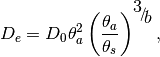
where 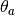 and 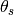 are the air-filled and total (saturated water-filled) porosities (-), respectively, and b is the slope of the water retention curve (-). However, Iiyama and Hasegawa (2005) have shown that the original Millington-Quirk (Millington and Quirk 1961) relationship matched measurements more closely in unsaturated peat soils:
(13)¶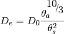
In CLM, we applied equation for soils with zero organic matter content and equation for soils with more than 130 kg m-3 organic matter content. A linear interpolation between these two limits is applied for soils with SOM content below 130 kg m-3. For aqueous diffusion in the saturated part of the soil column, we applied (Moldrup et al. (2003)):
(14)¶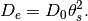
To simplify the solution, we assumed that gaseous diffusion dominates above the water table interface and aqueous diffusion below the water table interface. Descriptions, baseline values, and dimensions for parameters specific to the CH4 model are given in Table 2.32. For freezing or frozen soils below the water table, diffusion is limited to the remaining liquid (CLM allows for some freezing point depression), and the diffusion coefficients are scaled by the volume-fraction of liquid. For unsaturated soils, Henry’s law equilibrium is assumed at the interface with the water table.
2.24.7.4. Boundary Conditions¶
We assume the CH4 and O2 surface fluxes can be calculated from an effective conductance and a gaseous concentration gradient between the atmospheric concentration and either the gaseous concentration in the first soil layer (unsaturated soils) or in equilibrium with the water (saturated soil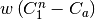 and 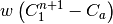 for the fully explicit and fully implicit cases, respectively (however, see Tang and Riley (2013) for a more complete representation of this process). Here, w is the surface boundary layer conductance as calculated in the existing CLM surface latent heat calculations. If the top layer is not fully saturated, the term is replaced with a series combination: , and if the top layer is saturated, this term is replaced with , where is the Henry’s law equilibrium constant.
When snow is present, a resistance is added to account for diffusion through the snow based on the Millington-Quirk expression (13) and CLM’s prediction of the liquid water, ice, and air fractions of each snow layer. When the soil is ponded, the diffusivity is assumed to be that of methane in pure water, and the resistance as the ratio of the ponding depth to diffusivity. The overall conductance is taken as the series combination of surface, snow, and ponding resistances. We assume a zero flux gradient at the bottom of the soil column.
2.24.7.5. Crank-Nicholson Solution¶
Equation is solved using a Crank-Nicholson solution (Press et al. 1992), which combines fully explicit and implicit representations of the mass balance. The fully explicit decomposition of equation can be written as
(15)¶
where j refers to the cell in the vertically discretized soil column
(increasing downward), n refers to the current time step,
 t is the time step (s), p1 is j+½, m1 is j-½,
and is the net source at time step n and position
j, i.e.,
.
The diffusivity coefficients are calculated as harmonic means of values
from the adjacent cells. Equation is solved for gaseous and aqueous
concentrations above and below the water table, respectively. The R
term ensure the total mass balance in both phases is properly accounted
for. An analogous relationship can be generated for the fully implicit
case by replacing n by n+1 on the C and S terms of equation .
Using an average of the fully implicit and fully explicit relationships
gives:
t is the time step (s), p1 is j+½, m1 is j-½,
and is the net source at time step n and position
j, i.e.,
.
The diffusivity coefficients are calculated as harmonic means of values
from the adjacent cells. Equation is solved for gaseous and aqueous
concentrations above and below the water table, respectively. The R
term ensure the total mass balance in both phases is properly accounted
for. An analogous relationship can be generated for the fully implicit
case by replacing n by n+1 on the C and S terms of equation .
Using an average of the fully implicit and fully explicit relationships
gives:
(16)¶![\begin{array}{l} {-\frac{1}{2\Delta x_{j} } \frac{D_{m1}^{} }{\Delta x_{m1}^{} } C_{j-1}^{n+1} +\left[\frac{R_{j}^{n+1} }{\Delta t} +\frac{1}{2\Delta x_{j} } \left(\frac{D_{p1}^{} }{\Delta x_{p1}^{} } +\frac{D_{m1}^{} }{\Delta x_{m1}^{} } \right)\right]C_{j}^{n+1} -\frac{1}{2\Delta x_{j} } \frac{D_{p1}^{} }{\Delta x_{p1}^{} } C_{j+1}^{n+1} =} \\ {\frac{R_{j}^{n} }{\Delta t} +\frac{1}{2\Delta x_{j} } \left[\frac{D_{p1}^{} }{\Delta x_{p1}^{} } \left(C_{j+1}^{n} -C_{j}^{n} \right)-\frac{D_{m1}^{} }{\Delta x_{m1}^{} } \left(C_{j}^{n} -C_{j-1}^{n} \right)\right]+\frac{1}{2} \left[S_{j}^{n} +S_{j}^{n+1} \right]} \end{array},](../../_images/math/dfa2789196c39df4641003c5a24f139a8b0a1ff0.png)
Equation is solved with a standard tridiagonal solver, i.e.:
(17)¶
with coefficients specified in equation .
Two methane balance checks are performed at each timestep to insure that the diffusion solution and the time-varying aggregation over inundated and non-inundated areas strictly conserves methane molecules (except for production minus consumption) and carbon atoms.
2.24.7.6. Interface between water table and unsaturated zone¶
We assume Henry’s Law equilibrium at the interface between the saturated and unsaturated zone and constant flux from the soil element below the interface to the center of the soil element above the interface. In this case, the coefficients are the same as described above, except for the soil element above the interface:
(18)¶
and the soil element below the interface:

(19)¶
2.24.8. Inundated Fraction Prediction¶
A simplified dynamic representation of spatial inundation based on recent work by Prigent et al. (2007) is used. Prigent et al. (2007) described a multi-satellite approach to estimate the global monthly inundated fraction () over an equal area grid (0.25 0.25 at the equator) from 1993 - 2000. They suggested that the IGBP estimate for inundation could be used as a measure of sensitivity of their detection approach at low inundation. We therefore used the sum of their satellite-derived and the constant IGBP estimate when it was less than 10% to perform a simple inversion for the inundated fraction for methane production (). The method optimized two parameters ( and ) for each grid cell in a simple model based on simulated total water storage ():
(20)¶
These parameters were evaluated at the 0.5o resolution, and aggregated for coarser simulations. Ongoing work in the hydrology submodel of CLM may alleviate the need for this crude simplification of inundated fraction in future model versions.
2.24.9. Seasonal Inundation¶
A simple scaling factor is used to mimic the impact of seasonal inundation on CH4 production (see appendix B in Riley et al. (2011a) for a discussion of this simplified expression):
(21)¶
Here, f is the instantaneous inundated fraction, is
the annual average inundated fraction (evaluated for the previous
calendar year) weighted by heterotrophic respiration, and
is the anoxia factor that relates the fully anoxic
decomposition rate to the fully oxygen-unlimited decomposition rate, all
other conditions being equal.